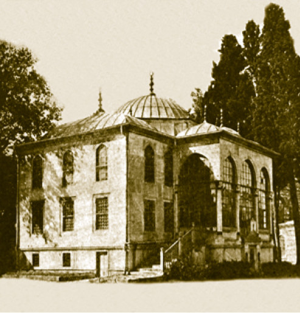
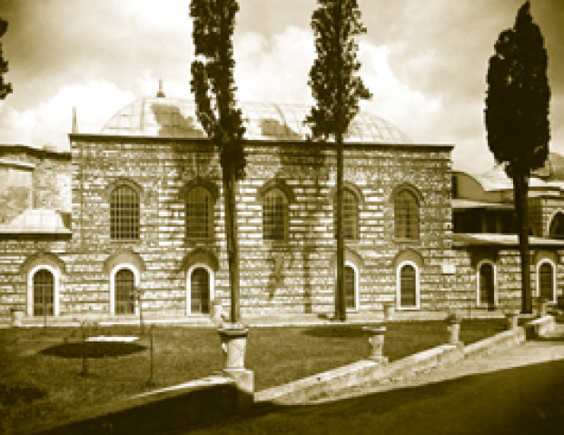

III. AHMED KÜTÜPHANESİ
Enderun avlusunun ortasında ve Arz Odası’nın hemen arkasında bulunan şirin mücevher kutusu gibi bir yapıdır. Lale Devri’nin şaheserlerinden olan kütüphaneye, Enderunluların kaldığı avluda bulunduğu için Enderun Kütüphanesi de denilmektedir. Sultan II. Selim Han’ın Mimar Sinan’a yaptırdığı Havuz Köşkü’nün yerine hattat ve okumayı seven bir padişah olan Sultan III. Ahmed, kendi adına 1718’de kütüphane yaptırmıştır. Sultan bu kütüphaneyi inşa ettirerek Enderun’daki ağaların, kendi hazinesindeki kitaplardan faydalanabilmesine imkân sağlamıştır.
Kütüphane, saray halkının ilme rağbetini gösterir ki Osmanlı saray medeniyeti bünyesinde Enderun ve Harem gibi iki okulu barındırmasından dolayı zaten ilim öğrenmenin, ilmî çalışma yapmanın teşvik edildiği bir mekândır. Kütüphane sayesinde İç Hazine, Has Oda Hazinesi ve Harem’de bulunan paha biçilmez yazma eserler bir araya getirilerek korunması sağlanmıştır. Zaten kütüphane kitabesinde de bundan bahsedilir.
Kütüphanenin vakfiyesinde, saray dışına hiçbir sebeple kitap çıkarılamayacağından bahsedilerek aslında bir kütüphanenin nasıl korunacağı konusunda mühim bir ipucu verilmektedir. Kütüphanenin 1719 tarihli bir kayıt defterinde Sultan III. Ahmed’in kitaplarını kütüphaneye vakfettiği, hayır duayla anılmak için vakfedilen kitapların kendi mührüyle mühürlenmesini istediği görülür. Kütüphaneye sonradan I. Abdülhamid ve III. Selim zamanlarında da çeşitli kitaplar vakfedilmiştir.
Bina, kitaplar ve okuyucular düşünülerek inşa edilmiştir. Kitapların rutubetten korunması için kütüphane, zemin kata değil zemin üstü bir kata yapılmıştır. Dış duvarları beyaz mermerdendir ve ön tarafı üç kubbe ile örtülüdür. Kütüphaneyi iki sırada 32 pencere aydınlatır. Böylece kitapların rahat okunabilmesi için aydınlık bir ortam sağlanmış, hem de içeride rutubet oluşmaması temin edilmiştir. Kapı ve pencere kanatları Osmanlı sedef ve fildişi kakmacılığının güzel örneklerindendir. Çinileri ve gömme kitap dolapları ve dolapların her biri birer zarafet timsali sedef, fildişi kakmalı nefis kapakları Türk sanatının güzel örneklerindendir.
Kütüphane duvarında Sultan III. Ahmed’in bizzat kendisinin yazdığı
Eşhedü en lâilahe illallâh
Yapdım bu makâmı limerzatillah
Okundukça tefâsîr ü ehâdîs
Şefaattir ümidim yâ Resulallâh
mısraları vardır. Sultan III. Ahmed, kütüphanedeki tefsir ve hadis kitaplarının okunmasının kendisinin şefaatine vesile olacağı ümidini taşımaktadır.

III. Ahmed Kütüphanesi’nin bir asır evvelki hâli,
günümüzde revakların arasındaki camekânlar kaldırılmıştır.
Kütüphanenin merdivenleri sabah namazlarında Enderun koğuşlarını namaza kaldırmak için kullanılırdı. Enderun’un nöbetçi müezzini merdivenlere çıkar ve koğuşlara doğru gür sesiyle sabah ezanını okurdu. Ardından bütün Enderun halkı Ağalar Camii’ne giderek sabah namazını kılardı.
Kütüphane içerisinde bugün kitap bulunmamaktadır. Buradaki yazma eserler 1966’da Enderun Ağalar Camii’ne şimdiki adıyla Topkapı Saray Kütüphanesi’ne kaldırılmıştır. Eski fotoğraflarda görülen hat levhaları da depolara konulmuştur. Kütüphanenin; vakfiyesi, kitaplarının envanter defteri ve binanın temelinin atıldığı kazma halen saklanmaktadır. Aynı kazma, III. Ahmed Camii’nin temelini atarken de kullanılmıştır.
III. Ahmed, Avcı Sultan Mehmed diye bilinen IV. Mehmed’in Gülnuş Emetullah Sultan’dan olma oğludur. Kendinden evvel pek nadir olarak rastlanacak şekilde baba bir, ana bir kardeşi II. Mustafa padişahtı. O, Edirne Vak’ası’yla tahttan indirildiği gibi III. Ahmed de Lale Devri dediğimiz dönemin sonundaki Patrona Halil İsyanı’yla tahttan indirilmiştir. Uzun saltanatı maalesef tarihçiliğimizde çok zıt yorumlara konu olmuştur. Bunlardan birincisi israf ve rüşvetin arttığı bir dönem olarak vurgulanır. İkincisi ise bilhassa Türkiye’nin ünlü tarihçilerinden Ahmet Refik’in yorumuyla bir sanat ve Batı’ya açılma dönemi olarak yorumlanır. İkisi de doğrudur. III. Ahmed devrinde Osmanlı akademik kurumlarında kurulan mühendishaneler yoluyla bir gelişme başlamıştır. Türk mimari sanatı Batı’ya açılmıştır. Buna karşılık Doğu ilimleri, Fars edebiyatı tetkiklerinin de geliştiğini görmek mümkündür. Yine bu devirde mimarideki Osmanlı baroku dediğimiz inceliğin yanında kaligrafi ve bahçe mimarlığı gibi konularda büyük atılımlar görülmektedir. İstanbul tarihinde çiçekçilerin, mimarların, edebiyat konusu olması, tezkirelere konu edilmesi (mesela Ubeydullah’ın Tezkire-i Şukûfeciyan’ı gibi) yine bu devre aittir. III. Ahmed ayrıca sanatkâr bir padişah olarak İstanbul’a en azından iki tane abidevi çeşmeyi hediye etmiştir ve bu çeşmelerin kaligrafisi de yine onun eseridir ki onun ismini yaşatmaktadır. Topkapı Sarayı’ndaki Kütüphanesi de bunlardan biridir.
Küçük ve Büyük Enderun Odaları
Bâbü’s saade’den girildiğinde sol tarafta Küçük Enderun Odaları ve sağ tarafta Büyük Enderun Odaları bulunur. 9–11 yaşlarında devşirilen çocukların zekâ ve fizik bakımından en dikkat çekenlerinin ilk elde yerleştirildiği yerlerdir. Edirne Sarayı, Galata Sarayı gibi okullarda eğitilen ve bunlar arasından seçilenlerin alındığı, bir anlamda ilk sınıflardır. Enderun dediğimiz mektep, sınıf bulunan bir okul değildir, zaten burada insanlar hizmet içi eğitim görürler, koğuştan koğuşa terfi ederler. Padişah, sarayında kendilerini beğendikçe padişaha daha yakın hizmetlere verilirler. Küçük ve Büyük Odalar bu sistemde Enderun’un ilk iki kademesini teşkil eder.
14–15 yaşındaki gençlerin bir yanda edebiyat, biraz Arapça-Farsça, Kur’an-ı Kerim ilimleri, hüsnühat ve spor eğitimi gördükleri ama ön planda hizmet ederek sarayın hayat kurallarını öğrendikleri görülür.
Bu ilk iki odanın öğrencilerine çok cüzi bir maaş, yılda iki kat elbise verilir. Eteklerini bellerine soktukları için bu müptediler veya başlangıç Enderunlularına “dolamalılar” denir. Bunlar ancak belirli bir hizmet ve imtihan döneminden sonra odabaşılarının olumlu reyiyle ve padişahın tasdikiyle kaftanlı olacaklardır. Bu aşamayı geçemezlerse kapıkulu ocaklarına, sipahi bölüklerine gönderilirler. Üst sınıfa yükselenler “Seferli”, “Kilerli”, “Hazineli” ve “Has Odalılar” rütbesine yükselerek “Kaftanlılar” grubunu meydana getirirler.
Buradaki eğitim çok sıkı bir disiplin içinde verilirdi. Verilen eğitim onların kabiliyetlerini ortaya çıkartmayı, zekâlarını kullanmayı ve sabırlı olmalarını sağlamayı hedef edinirdi. Bu odalarda Enderun Mektebi talebeleri dışında sancağa çıkmamış şehzadeler de eğitim görürlerdi. Ders verenler sadece saraydan olmayıp aynı zamanda saray dışından da hocalar getirildiği vâki idi. İslâmi ilimlerden olan Kur’an, hadis, akaid, fıkıh, feraiz (miras hukuku), belagat (meani, usul, bedî, beyan, hikmet) gibi dersler okutulurdu. Bunun dışında tarih, coğrafya, hendese, şiir, inşa, musiki, hey’et gibi dersler de verilirdi. Bu dersler için bazen Horasan, Şiraz, Bağdat gibi yerlerden hocalar getirildiği bilinir. Enderun’da Türkçe, Arapça, Farsça gibi dillerin öğretilmesinin yanı sıra güreş gibi sporlar ve kemankeşlik; kılıç, tüfek, gülle, mızrak, cirit gibi savaş gereçlerinin kullanımı ile ilgili askerî eğitimler de verilirdi. Bunlar dışında yüzlerce çeşit tarzda sarık sarmak, deri üzerine şekiller işlemek, ok yapmak, sadak süslemek, eyer takımları yapmak gibi şahsi kabiliyetleri ön plana çıkaran eğitimler de verilirdi. Verilen eğitimlerin en ilginçlerinden biri de doğan, şahin gibi yırtıcı kuşları, köpek ve tazıları eğitmekti.
Enderun ağaları saray teşrifatını, görgü kaidelerini ise Bâbü’s saade ağasından ve ak ağalardan öğrenirlerdi.
Koğuşlar uzun bir kapalı mekânın yanlarındaki seki şeklinde kerevet yerlerinden, aynı şekilde inşa edilmiş ahşap bir üst kattan müteşekkildi. Koğuşların yan taraflarında oda hamamı (mağsel), çeşme ve tuvalet bulunurdu. Küçük Oda’nın bazı birimleri; koğuştan banyoya geçilen kapı ve çinilerin bir kısmı günümüze ulaşmıştır. Avlunun üst tarafında bulunan Çeşmeli Sofa üzerinde Sultan III. Mustafa tarafından her gece iki kandil yakılması ve bu kandillerin giderleri için vakıf tesis edilmesine dair bir kitabe vardır. Bu vakfın uzun süreli olamamasından dolayı Yakub Ağa tarafından su haznesinin üzerinde her gece bir mum yakılması vakfedilmiştir.
Bâbü’s saade’nin sağ tarafında bulunan büyük oda 1857’de yandığı için günümüze ulaşamamıştır. Bu yangında meşkhâne ve nakışhâne de yanmıştır. Bugün bu yapıların yerine yapılan mekânlarda saray itfaiyesi, hizmet binaları bulunmaktadır.
Enderun Ağalar Camii
Has Oda’nın yanında günümüzde Topkapı Sarayı Kütüphanesi’nin bulunduğu bina Enderun Ağalar Camii’dir. Fatih Sultan Mehmed tarafından yaptırılan cami, saray içindeki en eski ve en büyük camidir. Sarayın merkez camiidir, zira geçmişte bütün Enderun halkıyla beraber padişahlar ve şehzadeleri de yatsı namazları hariç diğer bazı vakit namazlarını burada kılarlar. O şartla ki selâtin camilerinin baş imamlarından biri gele... Bir dönem “Hünkâr Camii” olarak anılan camiye Enderun ağaları geldikleri için “Ağalar Camii” namıyla meşhur olmuştur. Enderun avlusundaki diğer yapılara göre çapraz durmasının sebebi kıbleye doğru yapılmış olmasındandır. Giriş kapısının üzerinde Kelime-i Tevhid yazılı bir kitabe vardır.

Padişahların vakit namazlarını kıldıkları Endurun Ağalar Camii
Enderun halkının hiçbir yerde görülmeyecek sembolleri vardır. Mesela, Enderun’daki Ağalar Camii’nin muhtemelen 16. asır sonunda çini panolarla donanmış kısmında has odalılar, padişahla birlikte vakit namazlarını kılarlar. Caminin düz badanalı diğer kısmında ise öteki koğuş ağaları namaz kılar. Rütbenin, kılık-kıyafet ve hitabet dışında ibadet mahalline kadar yansıması dünyada belki ancak bu camide görülür.
Enderun Ağalar Camii’nin arka tarafında üç pencere Harem Mescidi’ne açılır. Burada valide sultan ve haseki sultanlar camideki imama uyarak namazlarını kılarlardı.
Cami, dikdörtgen planlıdır. Bina içinde girişte 17. yüzyılın çinileri dikkat çeker.
Enderun Ağalar Camii uygun konumu ve rutubeti ayarlanabildiğinden dolayı bugün yazma eserler kütüphanesi olarak kullanılmaktadır. Topkapı Sarayı Kütüphanesi’nin eşsiz yazmaları sadece Osmanlı Türkçesi, Arapça ve Farsça ile sınırlı olmayıp Yunanca ve Slav dillerindeki yazmalarla da bir hayli kalabalık ve kıymetlidir. Bilhassa kitap seven ve tipik iki Rönesans senyörü diyebileceğimiz Fatih Sultan Mehmed Han ve Kanuni Sultan Süleyman Han buldukları güzel ve yararlı kitapları hangi dilde olursa olsun getirtmişlerdir. Topkapı Sarayı Kütüphanesi’ndeki ünlü Macar musiki notaları külliyatı olan Corviniana veya İstanbul antifeneksi olarak tanınır. Kral Matiyas Corvinus’un kitaplığından gelme bir eserdir. Corviniana burada bulunup tamir edilmiş ve yayımlanmıştır.
Yeniçeri Ocağı’nın devleti ve padişahı korumak yerine anarşinin merkezi olmasından dolayı kaldırılması kararı bu camide verildiğinden, mimarî kıymetinin yanında tarihî hatırası da mühimdir. Aynı şekilde Yeniçerilerin hamisi ve kışkırtıcısı olmakla suçlanan Bektaşi tekkelerinin kapatılması, mevcutlarının Nakşibendî dergâhlarının kayyumluğuna terki; dahası Şanîzade gibi seçkin bilginlerin zındıklıkla suçlanması ve sürgüne gönderilmesi de bu meş’um anılardandır.